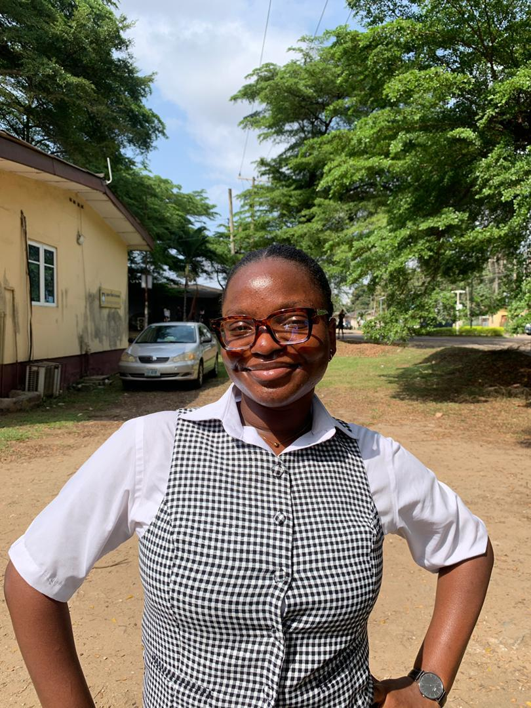
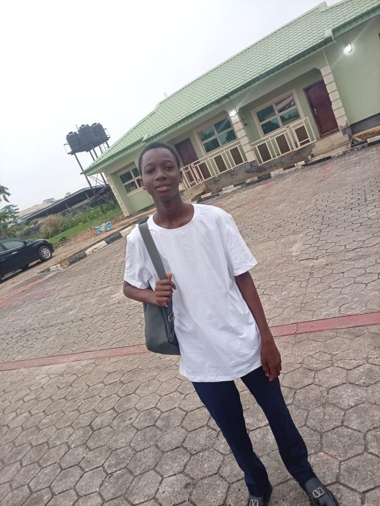
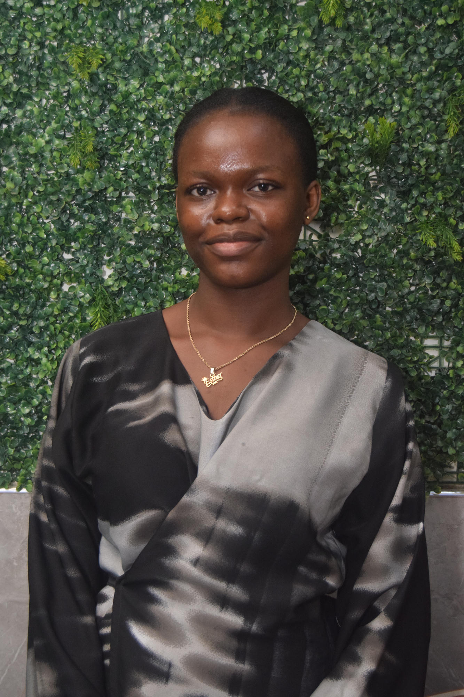
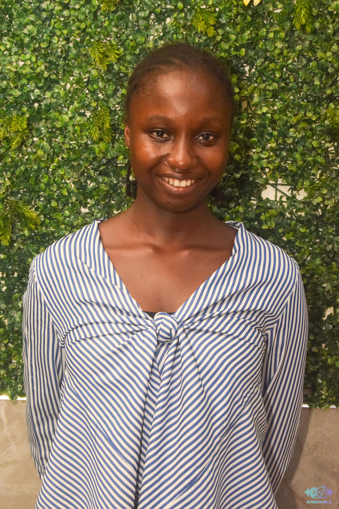

Identify
Finding talent that circumstances have hidden.
We seek out academically outstanding students who are held back by financial vulnerability, so no gifted young person goes unnoticed.
Investing in young talent
We walk alongside students with exceptional talent, helping them overcome financial barriers and pursue their education with confidence.
Supporting students through secondary school and on to further education.
Our story
Somewhere right now, a student is at the top of their class and wondering how they’ll pay for the next step. Their ability is not in question. Their circumstances are.
The Ambassador Tokunbo Oderinde Foundation was founded to change that narrative. We walk alongside academically gifted but financially disadvantaged students, offering practical support so they can pursue their education with confidence, dignity, and hope.
Our belief is simple: no brilliant young person should be denied the chance to learn, grow, and succeed because of a lack of resources.
When one student goes further, the effect reaches their family, their community, and the future leaders they will go on to inspire.
Every student deserves the chance to go further. Help us make it possible.
Our Mission
To find exceptional students held back by financial hardship, and walk with them from admission to graduation.
We identify academically outstanding students who lack the means to pursue their education, and we step in with practical support. Based on available funds, we cover tuition and associated charges in Nigerian federal and state universities, pay pre-university fees such as JAMB, IJMB, JUPEB, and A-Levels, and provide books, learning materials, and other essential fees.
We make sure registration is on time and every admission requirement is met, so no deadline or missing document stands between a student and their future.
We build a community around every beneficiary. Through mentorship from our alumni, including the Conrad Girls and past award winners, and through meet-and-greet gatherings, each student becomes part of a family that gives back and lifts others.
Because no gifted child should be defeated by an empty pocket.
No gifted child will be defeated by an empty pocket.
We see a generation of scholars, doctors, engineers, writers, and leaders who rose because someone chose to walk beside them. Students who once wondered how they would pay for the next step now stand in lecture halls with confidence, dignity, and hope.
We see a community that multiplies its own impact. Each beneficiary becomes a mentor, each graduate an ambassador, and each success story opens the door for the next student in line. What begins as one scholarship grows into a movement of people who lift as they climb.
We see a country where talent is measured by promise, not by purse. Every gift we receive and every student we reach brings that future closer.
Every student deserves the chance to go further. Together, we are making it so.
Every child has something special inside them, and that gift is unique to each one. Yet over the years, I have watched too many brilliant young people held back. Some lacked access to information. Others were limited by their background. But above all, it was financial constraints that stood in their way. That is why I have always believed that talent is never the problem. Access is.
That belief was tested in 2022, when I enrolled 25 students through my alumni in the Conrad Challenge. This international competition recognises talent and challenges young people to turn bold ideas into real solutions. I watched those girls rise to it. They were focused, creative, and determined. They took part, they competed with the best, and they even won. Their success proved something I had always believed: give a talented child the right platform, and she will exceed every expectation. The effect was beyond anything we had imagined.
Their success also left me with a question I could not shake. How many more students like them were waiting for someone to stand in the gap? Many were just as gifted, just as hardworking, and just as ready. They simply did not have the means to take the next step.
That question stayed with me, and the answer became ATOF. In 2025, the year I turned 60, my birthday gave me a moment to reflect. I did not want to stop at asking the question. I wanted to act on it. So I founded the Ambassador Tokunbo Oderinde Foundation to stand in the gap for students in need.
We started small. Numerous applications came in, and each one went through a rigorous screening process. A few students were chosen, and ATOF now supports their studies. It was a modest beginning, but it carried a clear purpose: to find exceptional students, remove the barriers in their way, and help them continue their education.
Today, those students are making their mark. Some are studying Medicine and Surgery at Obafemi Awolowo University and the Federal University of Medicine and Surgery, Abeokuta. Others are studying Law at the University of Lagos and Lagos State University.
Seeing them thrive is what drives me. I love to watch talented young people excel. They already have the ability, and I am glad to provide the support. My aim is to build a platform that nurtures their potential, backs their dreams, and empowers them to go all the way.
But ATOF is still growing, and we cannot do this alone. That is why I am asking you to give generously. Every donation helps us reach more gifted students. Together, we can raise the next generation of leaders without financial constraints standing in their way.
ATOF is where talent finds its way.
Amb. Tokunbo Oderinde
Founder, ATOF
Finding talent that circumstances have hidden.
We seek out academically outstanding students who are held back by financial vulnerability, so no gifted young person goes unnoticed.
Removing the barriers between a student and the classroom.
We cover tuition and associated charges for beneficiaries in Nigerian federal and state universities, along with pre-university fees such as JAMB, IJMB, JUPEB, and A-Levels. The level of support is based on available funds, so it may not always cover every cost in full. Every contribution helps us reach more students and stretch our support further.
Backing students beyond the fees.
We help beneficiaries with other essential fees, books, and learning materials, so they can focus on their studies. We also make sure registration is on time and every admission requirement is met, so no deadline or missing document stands in a student’s way.
Building a community that gives back.
Our alumni, including the “Conrad Girls” and past award winners, return as mentors and ambassadors. They guide new beneficiaries and carry our message through outreach and promotional activities.
No student walks alone.
We bring beneficiaries, alumni, partners, and supporters together through meet-and-greet events. These gatherings build friendships, open doors, and turn a scholarship into a community.
Student journeys
A glimpse of the students and aspirations represented in the foundation's story.

Law · LASUFormer Reagan MBGSS student Law, LASU

Medicine · OAUFormer Baptist Academy student Medicine, OAU, Ile-Ife

Law · UnilagFormer Reagan MBGSS student Law, Unilag

Medicine & Surgery · FUMMSAEx-Reagan MBGSS student Medicine & Surgery, FUMMSA, Abeokuta
Names and study pathways shown as provided in the foundation's introductory material.
Photo gallery
Moments from ATOF gatherings, student presentations, and shared celebrations.
Join us
Be part of a student's journey toward fulfilling their educational ambitions. Your support helps transform lives and empower young people for the future.
Get in touchWays to give
For donation questions, please contact the foundation before making a transfer.